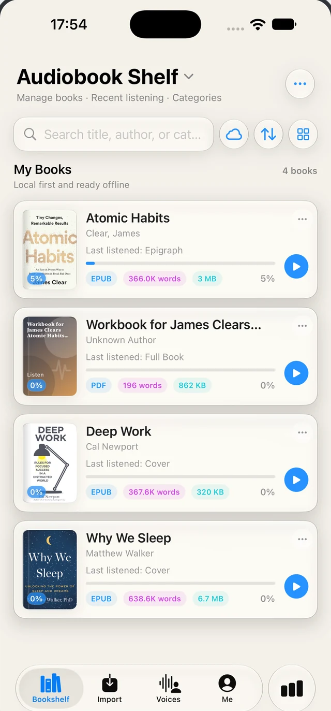
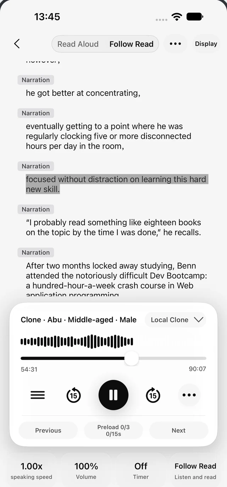

A SIMPLE START
System voices
Use the speech voices available on your device. A straightforward way to start listening; offline use depends on installed voice resources.
A LITTLE MORE STORY, EVERY DAY
Bring your own books. Turn text into speech, give characters distinct voices, and follow along as you listen. Want to go deeper? Let optional reading AI help you explore the story.
For iPhone & iPad · iOS 17 or later


01 / TEXT TO SPEECH & CHARACTER VOICES
Text to speech (TTS) turns the words in your books into spoken audio. Start with a narrator you like, or use AI-assisted role recognition to give the dialogue a cast of its own.
See the real voice libraryA PAGE, WITH A CAST
At the last train, two old friends met again.
“I thought you had already left.”
“Not without saying goodbye.”
Voice assignment illustration · not an audio demo
AI can suggest who is speaking. You can review roles and change their voices.
Use the speech voices available on your device. A straightforward way to start listening; offline use depends on installed voice resources.
Choose a supported online voice source or configure a custom speech service. Available voices, languages, and charges depend on the provider.
Create a voice from an authorized recording and synthesize locally once model resources are ready. Quality and speed vary by sample, model, and device.
Import compatible TTS plugins to extend your voice library. Use trusted sources; configuration and network requirements depend on the plugin.
Offline listening needs an offline-capable engine and its resources. Some voice features have membership or free-use limits; external services may charge separately.
02 / BRING YOUR OWN LIBRARY
On your phone, on your computer, in a cloud drive, or on your own server. Choose the route that fits your collection, without starting over.
A PLACE FOR YOUR BOOK FILES
Start with TXT or EPUB for reading and listening. MOBI is converted on import. PDF files can currently be saved to the library; full PDF reading and TTS are not promised. Image-only or protected content may not yield readable text.
Files · iCloud Drive
Choose a book in the system Files picker, including files stored in iCloud Drive.
Wi-Fi transfer · Direct download URLs
Send files from a computer browser on the same local network, or import a supported book from a direct download link.
OneDrive · Baidu · Aliyun · Quark · 115 · 123
Configure or authorize a supported service, then browse and import the files you choose.
WebDAV · S3 · OPDS
Connect a WebDAV server or S3 storage, or browse an OPDS catalog to import available book files.
Bring files you own or have permission to use. Remote sources require a reachable service and any necessary authorization; availability can change with the provider.
03 / YOUR READING AI
An optional companion for the passage in front of you, and a workspace for the bigger story. Connect a service, choose what to analyze, and review what it finds.
AN EXAMPLE TASK
“Recap these chapters and map the main character relationships.”
Choose chapters → Generate book notes → Review & refine
Discuss selected text or a chapter. Chapter context and indexed book passages can help ground the conversation.
Generate chapter summaries and explore story events and timelines, so a long break does not have to mean starting again.
Organize character profiles, relationship maps, world details, and foreshadowing in a workspace for that book.
Identify narration and dialogue in selected chapters, then review the roles and assign the voices you want to hear.
Build local retrieval indexes and manage saved AI memories. Remote embeddings are optional and may send chapter excerpts to your chosen provider.
Configure model routes for different tasks. Manage tool permissions and optional Skill or MCP extensions as your setup grows.
Choose what text may be sent, inspect usage, and set cost controls. Local cost estimates are guidance, not a replacement for provider billing.
AI is optional and needs a configured, available service. Necessary text may be sent to that service. Results can be wrong; review them. Membership limits and external provider charges may apply.
THOUGHTFULLY CONNECTED
From the first imported book to the last chapter of the night. Explore the real app below.
READ & LISTEN
Listen to your own books and follow the words as they are read. A reading experience that moves with you, not the other way around.
MADE FOR YOUR EVERYDAY
Not another thing to fit into your day. A new way to enjoy the moments already there.
ON THE MOVE
Turn a walk or a commute into time with your favorite book. Keep listening without keeping your eyes on a screen.
WINDING DOWN
Set a sleep timer, choose a comfortable reading theme, and end the day at your own pace.
DEEP IN A STORY
Meet a familiar character again? Ask your configured AI companion to help untangle the story.
FROM YOUR BOOKS TO YOUR EARS
No need to start your library over. Just bring a book you love.
Import from Files or iCloud, use Wi-Fi transfer, or connect a supported storage service.
Choose a voice for listening. Set the type, theme, and pace for a comfortable read.
Read, listen, and follow along. At home, on a walk, or in those little in-between moments.
Start with TXT or EPUB. MOBI is converted on import; PDF currently supports file storage, not guaranteed reading or TTS. Remote sources need configuration or authorization.
LOCAL FIRST. YOUR CHOICE.
Keep your books close and your choices clear. Online voices, cloud imports, and AI services are there when you choose to configure and use them.
Read downloaded books in supported reading formats without a network connection. Offline listening depends on your selected voice and downloaded resources.
Online voice and AI features may send necessary text to the service you select. Review that provider’s terms before connecting.
AI output can be imperfect. Review and adjust results, and only clone voices you have permission to use.
POLICIES
Privacy, terms, membership, and auto-renewal are available before you subscribe.
A FEW THINGS TO KNOW
Readio is a tool for reading and listening to books you bring yourself, not a subscription book catalog. Import files you own or have permission to use.
For iPhone and iPad running iOS / iPadOS 17 or later. Start with TXT or EPUB for reading and listening; MOBI is converted on import. The current PDF path saves the original file, so full PDF parsing, reading, and TTS are not advertised as supported. Image-only or protected content may not yield readable text.
Use Wi-Fi transfer with your phone and computer on the same local network, or import from Files, iCloud Drive, or a direct download URL. Supported cloud drives need configuration or authorization. WebDAV, S3, and OPDS are also available for compatible storage and catalogs.
Choose system voices, supported online TTS, local cloned voices, or compatible plugins. Downloaded books in supported reading formats can be read offline. Offline listening requires an offline-capable engine and its voice or model resources; online TTS and remote services need a connection.
Yes. With a configured AI service, role analysis can help separate narration and dialogue in selected chapters. Review the results and adjust roles or voice assignments yourself. Recognition is not guaranteed to be correct, and available voices depend on your selected engines.
The voice library supports local voice cloning. Only use recordings you have permission to use. Voice quality, language support, and performance depend on the selected model, sample, and device.
AI is optional: you do not need to configure it to import or read books, and ordinary listening just needs an available voice engine. AI access is a membership benefit, and some voices have free-use or membership limits. External AI and TTS services may charge separately; check the app and your provider for current terms.
Necessary text and tool results may be sent to the service you configure. Manage sending scope and tool permissions in AI settings. Local retrieval indexes and memories can be managed on-device; enabling remote embeddings may also send chapter excerpts. Review provider terms and do not treat AI output as verified fact.
YOUR BOOKS. YOUR VOICE. YOUR PACE.
A familiar book. A favorite voice. A little time for yourself.
Download for iOSFor iPhone & iPad · iOS 17 or later